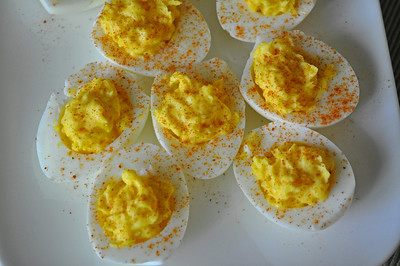

Deviled Eggs

Ingredients
- 6 eggs
- 1/4 cup mayonnaise
- 1 tsp white vinegar
- 1 tsp yellow mustard
- 1/8 tsp salt
- black pepper
- paprika
Directions
- Place eggs in a single layer in a saucepan and cover with enough water
that there's 1 1/2 inches of water above the eggs. Heat on high until water
begins to boil, then cover, turn the heat to low, and cook for 1 minute.
Remove from heat and leave covered for 14 minutes, then rinse under cold water
continuously for 1 minute.
- Crack egg shells and carefully peel under cool running water. Gently dry with paper towels.
Slice the eggs in half lengthwise, removing yolks to a medium bowl, and placing the whites on
a serving platter. Mash the yolks into a fine crumble using a fork. Add mayonnaise, vinegar,
mustard, salt, and pepper, and mix well.
- Evenly disperse heaping teaspoons of the yolk mixture into the egg whites. Sprinkle with
paprika and serve.
Here is a link to the
original recipe
Contact Me
Email Me